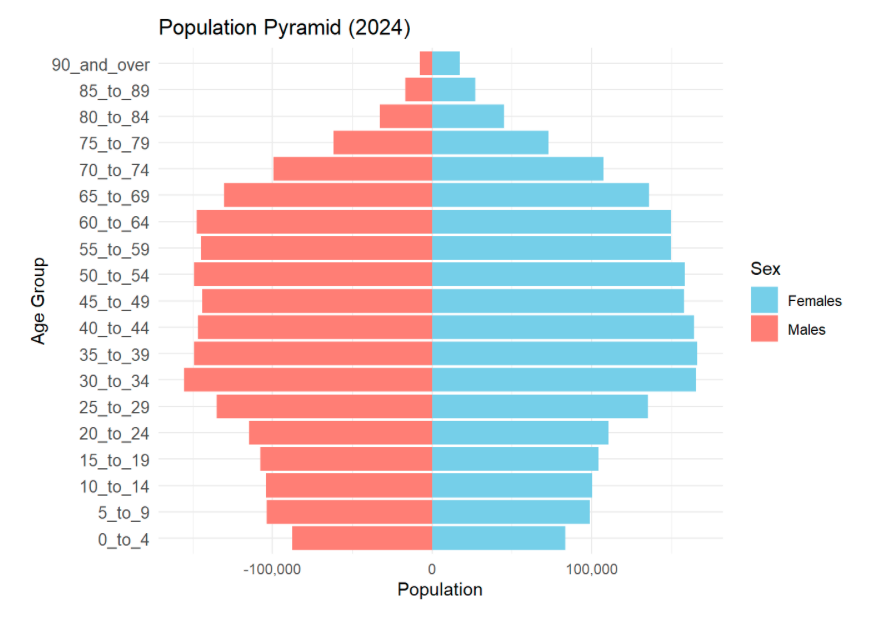

pacman::p_load(
tidyverse, ggplot2, haven, knitr, patchwork, ggthemes, scales,
ggridges, ggpubr, gganimate, ggdist, ggtext, ggalt, ggExtra, cowplot,
ggnewscale, colorspace, magrittr, RColorBrewer, ggstatsplot, egg,
geomtextpath, readxl, performance, parameters, see, ggiraph,
treemap, treemapify
)Take-home_Ex01 (Part 2): Investigating Singapore Residents by Planning Area / Subzone, Single Year of Age and Sex at June 2024 by Data Visualisations
Introduction
In this section, the visualization work submitted by Enrico Sebastian and Andre Ong Jia Kang will be evaluated. For each of the three visualizations, three well-executed design elements will be identified, along with three to four areas identified for improvement. Based on this evaluation, a revised version of each visualization will be developed to address the noted shortcomings while preserving the strengths.
Preparation
To begin the peer evaluation and makeover process, the necessary packages will be reloaded and the dataset will be re-imported. This ensures the working environment is properly prepared and consistent with the earlier analysis. Once the setup is complete, the three peer-submitted visualizations will be reviewed and enhanced.
respop <- read_csv("respopagesex2024/respopagesex2024.csv")Visualisation 1 Population by Planning Area (Bar chart by Enrico Sebastian)
This chart is intended to compare the population distribution across all planning areas in Singapore in 2024. It uses a horizontal bar chart to show which areas are the most and least populated, allowing for a quick visual assessment of population density across the country.
✅ Three Strengths
- Appropriate Choice of Chart Type
The use of a bar chart is suitable for this comparison, as it effectively represents population counts by planning area and highlights differences in population magnitude across areas. This makes visual comparisons straightforward and intuitive.
- Effective Use of Horizontal Bars
Horizontal orientation improves readability, especially given the long planning area names. It is more suitable than vertical bars for categorical data with long labels.
- Clear Title and Axis Labels
The chart includes a descriptive title and well-labeled axes, ensuring that viewers understand what the chart represents and what each axis encodes.
⚠️ Three Areas for Improvement
- Title and axis values are too small and not visually emphasized
The title is small and left-aligned, making it difficult to notice and not visually highlighted. Additionally, the x-axis tick labels (e.g., 100,000; 200,000) are too small, which affects readability.
To improve this, increase the font size of both the title and axis ticks, and center-align the title to draw the viewer’s attention and better anchor it to the chart.
- Unsorted bars hinder quick comparison
The bars are not ordered by population count, as the chart uses a random order for planning areas.
To improve this, reorder the bars in descending order of population to allow for quicker visual comparison and identification of population extremes.
- Lack of color variation limits interpretability
The chart applies the same color to all bars, which flattens the visual presentation and makes it harder to distinguish high-population areas from lower ones. This uniform appearance underplays the variation in population sizes.
To improve this, apply a population-based color gradient to the bars. Although displaying the exact values on each bar is typically effective for showing precise comparisons, doing so here —where there are 55 bars — would result in visual clutter and significantly reduce readability. Instead, using a gradient — where darker shades represent populations above 200,000, medium shades for 100,000–200,000, and lighter shades for under 100,000—preserves clarity while still visually conveying the relative magnitude of each planning area.
üîÅ Makeover Version
Below is the revised version of the original chart, applying all suggested improvements:
respop %>%
group_by(PA) %>%
summarise(Total = sum(Pop)) %>%
mutate(Pop_Bin = case_when(
Total > 200000 ~ "> 200,000",
Total > 100000 ~ "100,000–200,000",
TRUE ~ "< 100,000"
)) %>%
ggplot(aes(x = reorder(PA, Total), y = Total, fill = Pop_Bin)) +
geom_col() +
coord_flip() +
scale_y_continuous(labels = comma) +
scale_fill_manual(
values = c(
"< 100,000" = "#c6dbef",
"100,000–200,000" = "#6baed6",
"> 200,000" = "#084594"
)
) +
guides(fill = guide_legend(title = "Population Range")) +
labs(
title = str_wrap("Population by Planning Area (Singapore, 2024)", width = 60),
x = "Planning Area",
y = "Population"
) +
theme_minimal() +
theme(
plot.title.position = "plot",
plot.title = element_text(hjust = 0.5, face = "bold", size = 18),
axis.text.x = element_text(size = 11, color = "black"),
axis.text.y = element_text(size = 6, color = "black", margin = margin(r = 4), lineheight = 4.0),
legend.title = element_text(face = "bold"),
legend.position = "right",
plot.background = element_rect(fill = "#f5f5f5", colour = "#f5f5f5")
)Visualisation 2 Population by Age Groups and Gender (Pyramid bar chart by Enrico Sebastian)
This chart is intended to visualize the distribution of Singapore’s resident population by age group and gender in 2024. It adopts a population pyramid format, with males on one side and females on the other, allowing for direct comparisons of population size across age bands and between genders.

✅ Three Strengths
- Great Choice of Chart Type
The pyramid chart is a strong fit for visualizing a bar chart with two distinct categories — in this case, gender. It enables clear, side-by-side comparison of male and female populations across age groups, making demographic patterns easy to interpret.
- Intuitive Color Coding by Gender
Using distinct, contrasting colors for males and females (e.g., orange and light blue) allows for immediate visual differentiation and eliminates ambiguity in interpretation.
- Thoughtful Age Binning Enhances Readability
Instead of using every single year of age, the data is grouped into 5-year age bands (e.g., 0–4, 5–9, etc.), which reduces visual clutter while preserving the interpretive value of the age distribution. This allows for easier pattern recognition across life stages.
⚠️ Four Areas for Improvement
- Title is too small and not visually emphasized
The title lacks visual weight and clear association with the chart, making it easy to overlook.
To improve this, increase the font size, apply bold formatting, and center-align the title to enhance visibility and balance.
- X-axis values should be positive on both sides
Currently, the x-axis shows negative values on the left for males, which is unintuitive and may visually imply negative population.
To improve this, both male and female counts should be shown as positive values while still preserving the mirrored layout. However, as addressed in point 3 below, the makeover version will include value labels on each bar — so displaying detailed axis ticks becomes unnecessary. In such cases, only the central “0” label should be retained for alignment reference, while the other axis values can be hidden. But in scenarios where bar values are not shown, both sides of the axis must display positive tick values for accurate comparison.
- Visual comparison between genders is challenging without data labels
When the two bars for males and females of an age group are nearly equal in length, it becomes difficult to detect subtle differences and thus, comparison.
To improve this, add numeric labels to each bar to provide precise population values and strengthen readability across age groups.
- Gender colors do not follow common visual conventions
While not explicitly stated, a widely followed practice is to use darker shades (e.g., blue) for males and lighter or warmer tones (e.g., pink, red, or orange) for females. The original version reverses this convention — using orange for males and blue for females — which may feel visually off.
To improve clarity and maintain intuitive associations, the colors should be reversed to use sky blue for males and salmon or coral for females.
üîÅ Makeover Version
Below is the revised version of the original chart, applying all suggested improvements:
# 1. Aggregate by 5-year age bands
pyramid_data <- respop %>%
filter(!is.na(Pop)) %>%
mutate(Age_Group = case_when(
Age %in% as.character(0:4) ~ "0_to_4",
Age %in% as.character(5:9) ~ "5_to_9",
Age %in% as.character(10:14) ~ "10_to_14",
Age %in% as.character(15:19) ~ "15_to_19",
Age %in% as.character(20:24) ~ "20_to_24",
Age %in% as.character(25:29) ~ "25_to_29",
Age %in% as.character(30:34) ~ "30_to_34",
Age %in% as.character(35:39) ~ "35_to_39",
Age %in% as.character(40:44) ~ "40_to_44",
Age %in% as.character(45:49) ~ "45_to_49",
Age %in% as.character(50:54) ~ "50_to_54",
Age %in% as.character(55:59) ~ "55_to_59",
Age %in% as.character(60:64) ~ "60_to_64",
Age %in% as.character(65:69) ~ "65_to_69",
Age %in% as.character(70:74) ~ "70_to_74",
Age %in% as.character(75:79) ~ "75_to_79",
Age %in% as.character(80:84) ~ "80_to_84",
Age %in% as.character(85:89) ~ "85_to_89",
Age == "90_and_Over" ~ "90_and_over"
)) %>%
group_by(Age_Group, Sex) %>%
summarise(Pop = sum(Pop), .groups = "drop")
# 2. Set proper order of age groups
age_levels <- c("0_to_4", "5_to_9", "10_to_14", "15_to_19", "20_to_24", "25_to_29",
"30_to_34", "35_to_39", "40_to_44", "45_to_49", "50_to_54", "55_to_59",
"60_to_64", "65_to_69", "70_to_74", "75_to_79", "80_to_84", "85_to_89", "90_and_over")
pyramid_data$Age_Group <- factor(pyramid_data$Age_Group, levels = age_levels)
# 3. Mirror male population
pyramid_data <- pyramid_data %>%
mutate(Pop_plot = ifelse(Sex == "Males", -Pop, Pop))
# 4. Plot
ggplot(pyramid_data, aes(x = Age_Group, y = Pop_plot, fill = Sex)) +
geom_col(width = 0.9) +
# Male labels (left side, hjust = 1.1 to push left)
geom_text(
data = subset(pyramid_data, Sex == "Males"),
aes(label = comma(abs(Pop_plot))),
hjust = 1.1, size = 2.6, color = "black"
) +
# Female labels (right side, hjust = -0.1 to push right)
geom_text(
data = subset(pyramid_data, Sex == "Females"),
aes(label = comma(Pop_plot)),
hjust = -0.1, size = 2.6, color = "black"
) +
coord_flip() +
scale_y_continuous(
breaks = 0,
labels = "0",
expand = expansion(mult = c(0.1, 0.1))
) +
scale_fill_manual(values = c("Males" = "skyblue", "Females" = "salmon")) +
labs(
title = "Population Pyramid (2024)",
x = "Age Group",
y = "Population",
fill = "Gender"
) +
theme_minimal() +
theme(
plot.title = element_text(hjust = 0.5, face = "bold", size = 18),
axis.text.y = element_text(size = 9),
axis.text.x = element_text(size = 9),
legend.title = element_text(face = "bold"),
plot.background = element_rect(fill = "#f5f5f5", colour = "#f5f5f5")
)Visualisation 3 Population in Tampines’s Subzones (Bar chart and Box plot by Andre Ong Jia Kang)
This visualization is composed of two parts:
• The upper panel shows a horizontal bar chart comparing the total resident population across the top four subzones within the Tampines planning area: Tampines East, West, North, and Simei.
• The lower panel uses boxplots to illustrate the distribution of residents’ ages in each subzone, highlighting the median, interquartile range (IQR), and outliers.
Together, the panels enable a comparison of both population size and demographic structure across subzones.
✅ Three Strengths
- Multi-Chart Design Enables Richer Contextual Insight
By combining a bar chart and a boxplot in a dual-panel layout, the visualization allows readers to absorb related but distinct information — population size and age distribution — within a single frame. This is more informative than relying on a single-chart visualization.
- Appropriate Graph Selection for Each Variable Type
The bar chart provides an intuitive representation of total population counts across subzones, while the boxplots effectively convey the spread, central tendency, and variability of age. In the form of good chart choices, they efficiently deliver both scale and structure of the population.
- Consistent Subzone Ordering Enhances Readability
The subzones appear in the same order — Tampines West, North, East, Simei — across both panels. This consistent alignment makes it easy for viewers to navigate between the bar chart and boxplots without confusion.
⚠️ Four Areas for Improvement
- Titles of both charts lack emphasis
The titles are small and left-aligned, making them easy to overlook.
To improve this, center-align both titles, apply bold formatting, and increase the font size to enhance visibility and make the purpose of each chart immediately clear.
- Subzone order is unintuitive
The current order of subzones does not follow a logical or alphabetical pattern, which can confuse readers when scanning across both visualizations.
To improve this, reorder the subzones as Tampines East → Tampines North → Tampines West → Simei for a more familiar presentation.
- Visual redundancy in explanatory note
The annotation stating “Bars = total pop; Boxes = age spread” at the bottom right is unnecessary, as this distinction is already evident from the respective chart titles.
To improve this, remove the note to streamline the visuals and avoid clutter.
- Inconsistent color usage across charts
The bar chart uses a single color for all subzones, while the boxplots use four distinct colors — causing a visual disconnect when trying to compare across both.
To improve this, assign a distinct color to each subzone and apply it consistently across both charts to support intuitive tracking and comparison.
üîÅ Makeover Version
Below is the revised version of the original chart, applying all suggested improvements:
# Filter Tampines and get top 4 subzones by total population
top4_subzones <- respop %>%
filter(PA == "Tampines") %>%
group_by(SZ) %>%
summarise(Total = sum(Pop), .groups = "drop") %>%
arrange(desc(Total)) %>%
slice_head(n = 4)
top4_names <- c("Simei","Tampines West", "Tampines North", "Tampines East")
# Prepare bar chart data
bar_data <- top4_subzones %>%
filter(SZ %in% top4_names) %>%
mutate(SZ = factor(SZ, levels = top4_names))
# Prepare boxplot data
box_data <- respop %>%
filter(PA == "Tampines", SZ %in% top4_names) %>%
mutate(
Age = ifelse(Age == "90_and_over", 90, as.numeric(Age)),
SZ = factor(SZ, levels = top4_names)
) %>%
select(SZ, Age, Pop) %>%
uncount(weights = Pop)
# Define colors
colors <- c(
"Tampines East" = "#66c2a5",
"Tampines North" = "#8da0cb",
"Tampines West" = "#fc8d62",
"Simei" = "#e78ac3"
)
# Create bar chart
bar_plot <- ggplot(bar_data, aes(x = SZ, y = Total, fill = SZ)) +
geom_col(width = 0.7) +
scale_fill_manual(values = colors) +
coord_flip() +
labs(title = "Total Population – Top 4 Subzones", x = NULL, y = "Population") +
theme_minimal() +
theme(
plot.title = element_text(hjust = 0.5, face = "bold", size = 14),
axis.text.y = element_text(size = 12),
axis.text.x = element_text(size = 12), # enlarged x-axis
legend.position = "none"
) +
scale_y_continuous(labels = comma)
# Create boxplot
box_plot <- ggplot(box_data, aes(x = SZ, y = Age, fill = SZ)) +
geom_boxplot(width = 0.6, outlier.size = 1) +
scale_fill_manual(values = colors) +
coord_flip() +
labs(title = "Age Distribution by Subzone", x = NULL, y = "Age (years)") +
theme_minimal() +
theme(
plot.title = element_text(hjust = 0.5, face = "bold", size = 14),
axis.text.y = element_text(size = 12),
axis.text.x = element_text(size = 12), # enlarged x-axis
legend.position = "none"
)
# Combine plots
(bar_plot / box_plot) + plot_layout(heights = c(1, 1))Summary
Through this peer evaluation and makeover exercise, important design lessons were surfaced—from optimizing chart types for clarity to ensuring visual consistency and interpretability. By carefully analyzing the original strengths and addressing identified weaknesses, each revised visualization now communicates insights more effectively while preserving the intent of the original work.